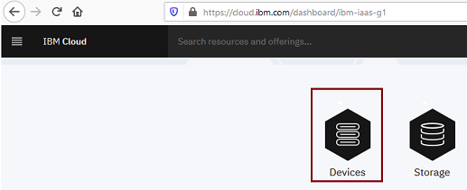

Provisioning a bare metal server with Intel Software Guard Extension architecture
Details:
Follow these steps to provision a bare metal server with SGX option enabled.1. Login to IBM Cloud account
2. Click on the Classic Infrastructure

Click on Devices

Click on Bare metal server
3. Server/Image/Addon should be selected as per below table. Select Image (OS) as per your requirement.
4. Drop down will have the option to select SGX.
In this case I have selected, Intel Xeon E3-1270 v6 with Storage up to four drives and with Ubuntu Linux 16.04 LTS Xenial Xerus (64 bit) OS
5. When you're working with Intel SGX enabled bare metal servers, be sure that you also install the SGX platform software and drivers.
Go to the Intel Open Source website and select the option for installation that matches your operating system.
Download the binary installation option. This makes sure that you're using a stable version of SGX in your workloads.
For specific instructions for each type of installation, see the Intel SGX Installation Guide for Windows or the Intel SGX Installation Guide for Linux.
References:
About Bare metal SGX: https://cloud.ibm.com/docs/bare-metal?topic=bare-metal-bm-server-provision-sgx
About SGX: https://software.intel.com/content/www/us/en/develop/topics/software-guard-extensions.html
About IBM Cloud Data Shield: https://cloud.ibm.com/docs/data-shield?topic=data-shield-getting-started
Back to Home